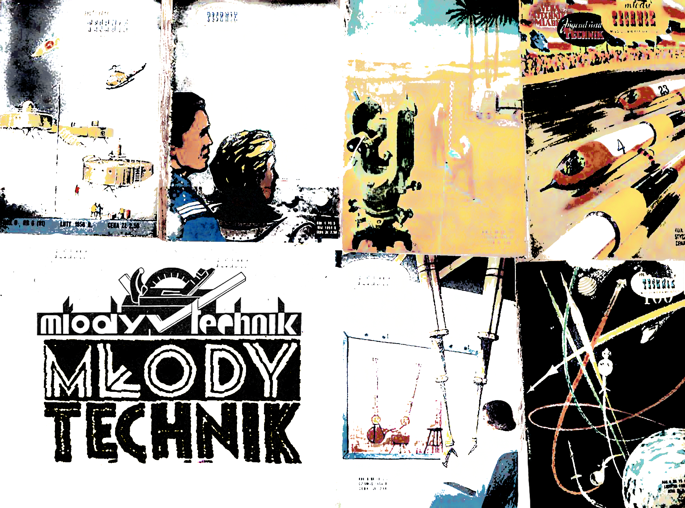
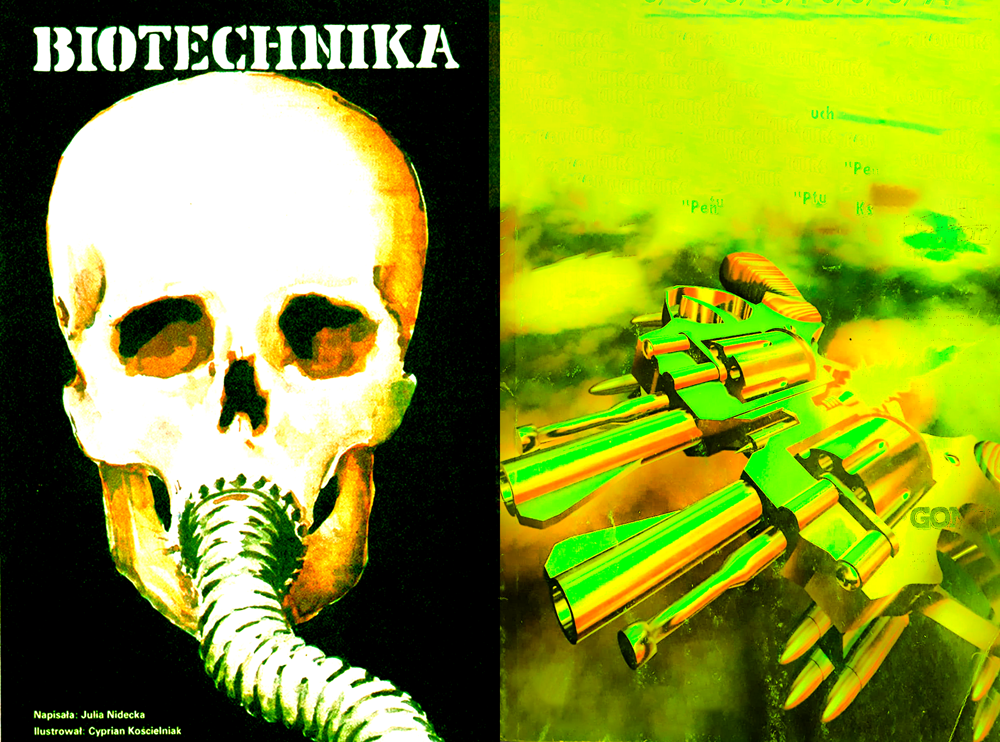
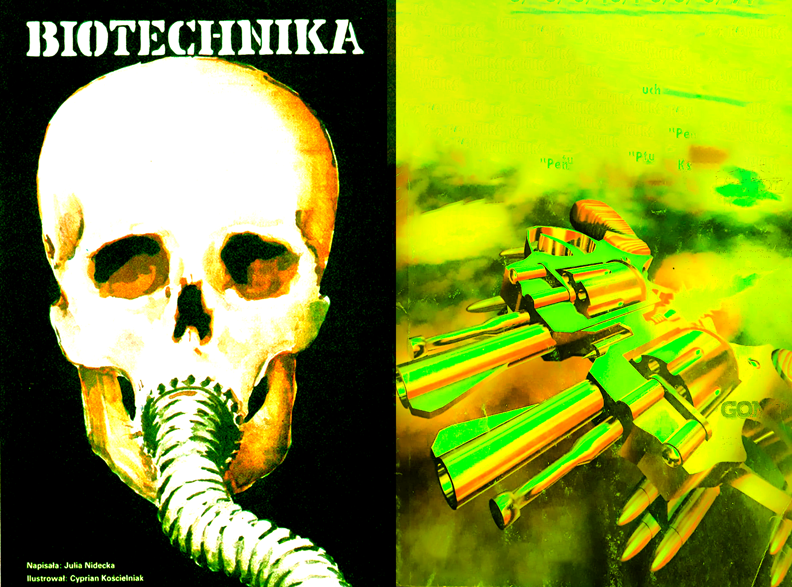
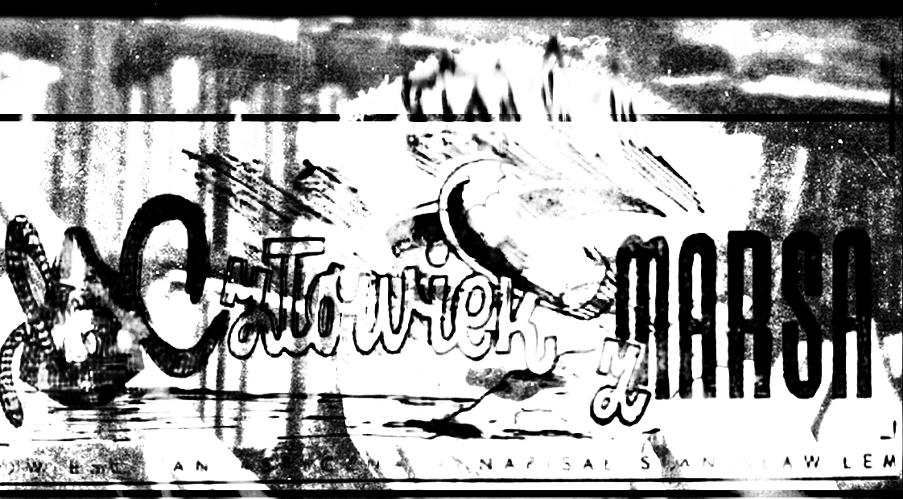
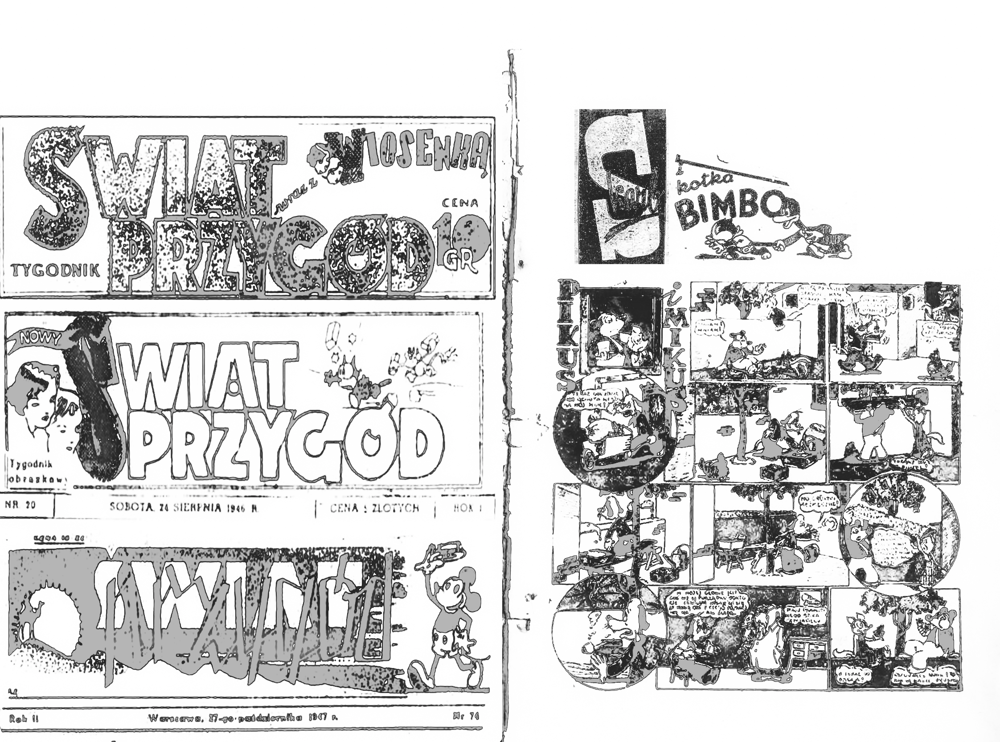
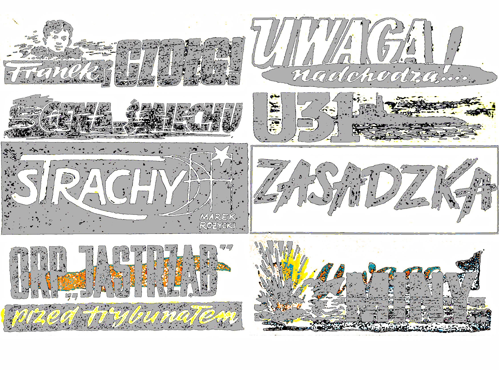

INTRODUCTION
Poland after the end of World War II in 1945 was practically under the communist regime. “The New Government” totally ignored the real Polish exile-government that was based in London from 1940, The Iron Curtain was efficiently blocking anything that could be seen as a threat to the Eastern Bloc, which resulted in limitations towards freedom. The system lasted for 44 years. On 4th June 1989 the Solidarity Union won through the election voting, Poland finally broke the chains and led to a self-empowerment of the country. Despite all of the hardship during the Soviet occupation it was slowly rebuilding itself from the tragic past of World War. Communist regime of state working policy, nationalization of industry and integration of private lands, indeed helped to rebuild the country and fight poverty. Nevertheless the society was still restrained. Yet from time to time the Iron Curtain sometimes opened.
Back then in the PRL (Polish People’s Republic) press was censored and it was being used by the ruling party propaganda to control society. Every piece of information needed to be approved by “The Main Office for the Control of Press, Publications and Performances”, which was established immediately after the war. Despite the censorship in the country the literature was still fruitful. Rise and development of science fiction novels were significant during that period of time. It was a “SF BOOM”.
SF BOOM
Most of the Eastern European countries from that time got their own technical magazine equivalent. They were aimed to catch the attention of young adults from technical schools and strictly encourage interest in technology and science. One of the first ones that appeared in Poland was “Młody Technik” (“Young Engineer”) that originally started in 1932. After many ups and downs and breaks in production in September 1950 the form changed. It was finally published systematically every month and has been enriched graphically. Now it could reach a larger audience outside of the strictly technical school communities. The most important aim was to create great interest and curiosity in the world. Articles covered mostly new technology and explained technicality behind the machines. It also included breaking scientific news from the world like Apollo 11 landing in 1969.
 


Under the guidance of the new chief director, Zbigniew Przyrowski (from June 15, 1950 to July 31, 1981) effectively pushed science fiction in its pages. He was the first one to initiate the national science fiction stories contest in Poland. Due to the many years of promotion of Polish science fiction, through publishing works by young Polish authors, one of the core founders of “National Club of Fantasy and Science” Fiction, Andrzej Wójcik, called him “The Polish Gernsback”.1 Very aptly because Hugo Gernsback was actually the first of all of them to create the first science fiction magazine in history, founded in New York in 1926. With little delay the rise of science fiction in Poland has just begun.
One of the best known polish sci-fi writers from that era Stanisław Lem, debuted with his first fantasy novel in 1946, entitled “A Man From Mars”; with the help of a similar journal for adolescents, “Nowy Świat Przygód” (New World of Adventures).The magazine was a continuation of the pre-war weekly “ŚWIAT PRZYGÓD”. Almost 50% of the magazine contained comics. Some of them were actually 1:1 copies of the western cartoon characters, executed as an uncanny bootleg (“Pikus i Mikus”). The most popular and more serious through all of them were ones depicting World War II. (From Left to Right) “Franek and tanks”, “Attention they are coming!..”, “The Price of Laughter”, “U-31”, “Fears”, “Ambush”, “ORP Hawk”, “Mines”; these are a couple of titles I picked from the journal, most of the time they depict heroic characters and their bravery during occupation. Cult of the motherland heroes was a popular way to glorify the ones that fought for freedom and to some it was a tool to overcome the horrific times by remembering them. It becomes almost a designed tool; stories about a hero acting in a collective, in the material and cognizable world. They were mostly accepted within the ideology of the authorities controlling the country. Over the years more and more adventurous stories were becoming the main source of the magazine. Curiosity began to take the lead in the heads of youngsters, stories about wild west cowboys, unknown galaxies and aliens were now the most desirable. Western culture in Poland was surely desirable. The system slowly started to show its true face within the soviet rotten power structures.
  
Until then there had been no specific magazine fully dedicated to science fiction. Probably the closest one to the sci-fi genre was ‘Alfa’. In the year of its creation in 1976, two issues of the magazine were published, the next three were issued yearly, "Alfa 6" appeared in 1981, and the last issue in 1985. It was not strictly a comic book magazine, it contained popular science articles, science-fiction stories and scientific curiosities and glossaries. Magazine itself was well designed inside out with full-color vivid illustrations; it definitely stood out among other printed matter available in kiosks. One of the brilliant comic book artists Grzegorz Rosinski happened to be one of the contributors to the comic strips. He is best known for his work ‘Thorgal’ that he created together with Jean Van Hamme, - a comic book that became a huge hit in Europe. For Alfa he drew ‘W służbie Galaktycznej’, ‘Historia Polski’ and ‘Pilot Śmigłowca'.


The big change came in October 1982 when the first issue of ‘Fantastyka’ came out.
SCI-FRIED
It might be that I was around 10 or 12 years old, very much bored in the countryside with my parents and their group of university friends. They organize the event every year. I was always the oldest from the kids there, and at the time I saw a huge age gap between us. Find a way to kill time. I remember myself wandering around the forest and old bunker. No effect. I remember that it might be that the weather was too bad or the rooms were free and I finally got a chance to be in the old cottage house. I used to collect figures and read comics. My daily routine was to play and read Thorgal or Star Wars comic series. I was always drawn and exposed to the sci-fi/fantasy genre. One of my first encounters with comics was an old Batman/Predator comic magazine that I got as a gift from my dear godmother. I was maybe 3–4 years old and her boyfriend worked at a flea-market selling comic books. This time I discovered something different yet familiar in a way.

Our room looked very much like a mountain hut, covered all around with wood panels and surrounded with different sizes of deer skulls and antlers that were hanging as trophies on the walls. Naturally as a bored kid after a while of studying them all I felt the urge to go through the whole room and see what I could find interesting. There were piles of old books lying around and some magazines. Only a couple things caught my attention and my eyes just lightened up immediately. There were three issues of Fantastyka from 1985 and 1990. I remember myself studying it in every detail, all of the images inside again and again. They were very much mysterious and powerful to me, and surely looked differently than images I knew back then. Without asking anyone I just took them back home with me. I couldn’t resist leaving them there.
Just a year ago while cleaning my childhood room in Warsaw I found them stacked in the wooden box in between my old comics collection. Right away I got struck with the same feeling that I experienced as a 10 year old. More mature look on the designed object made me hungry for more. I was lucky enough to finally complete my collection of almost all of the issues from 1982—2010.

RISE OF FANTASTYKA
When its first issue came out nobody actually knew that the magazine would be so successful in a short period of time. Not too long after people would need to queue in the line to buy it. ‘ From the start it was a monthly magazine with a print run of close to 200,000, claiming sales of around 150,000.107’2 It was the first periodical publication to popularize fantasy and science fiction in communist Poland. A4 format magazine with 84 pages was filled with novels written by Polish and foreign authors that were continued periodically. It attracted the youth as well as adult readers. Apart from story-series that were published you could find many more in it like: scientific news, books and movies reviews, speculative essays and art. Magazine served in a way as today's online forum. It was a tool for a large community of mostly young people to connect and unite. FANTASTYKA got a space for fans to send and publish their own letters. Section was called ‘Readers and Fantastyka’. There was a space to ask questions, give reviews on stories or sometimes open calls to raise new fan clubs in local areas.
‘The Polish teacher told me to understand, while working on another topic from literature, that fantasy is shit and that some adventures from the series ‘They Killed Him’ were much more interesting and valuable for the students. that fantasy is not even included in literature. Is this a real teacher who ended up in a general high school and did not bother to read Oramus, Zajdel, Hollanek or Niven and even Lem does not consider him But that's not all, the worst thing happened when asked the class who really knew the things of Oramus, Zajac, Clarke or Niven. Nobody. Nobody volunteered. Really none of them. My classmate, and I love them, did not come into contact with fantasy literature until I was 17? It is impossible! But it is true: out of 40 people in class, 39 did not read fancy at all, did not read even Lem, a trequent woman, our Polish philologist, did not recognize it as a literary monthly, and she probably knows how to read.
Yours Ziemowit
I kindly ask you to allow me to purchase posters on fantasy science or to inform me where I can buy them, because my nephew from the USSR asked me to bring them to him. He has seen these posters in the "Technik Młodzierzowy" magazine and he wants to have them. He even gives me the address of your editorial office.
Stanisława Pietras from Rzeszów
I decided to write under the pseudonym Kruk. I am a student in the second grade of an electrical technical school, and I have been interested in fantasy since I can remember.
Marcin Krawczyński from Warsaw
We are fanatics of "Star Wars". We are going to set up fan clubs and publish fanzines, which will include photos, articles and reprints. We are looking for people willing to cooperate with us and materials related to Star wars. Please contact us at:
Dariusz Dowhaniuk Os. 30-lecia 1/1 KRAPKOWICE 47-303,
Pawel Prystupa Os. 30-lecia 7/53 KRAPKOWICE 47-303’
Lastly a place of disputes and ideological discussions. It naturally provided a steady firm platform for writers, critics and artists and designers. The fascination and curiosity of the other different world was definitely present among readers. Magazine itself was a way for them to escape from the vain reality at least for the moment and imagine different realities, speculating about the long awaited future or what tomorrow will bring. Collective of people reading periodicals shared the same history and its aftermath, ongoing uncertainty in the system where it was slowly coming to an end. It deformed and left the mark itself inside the magazine pages.
There were few attempts to start the magazine earlier, the birth of the magazine took almost 10 years in total. It wasn’t so easy back then in the Polish People’s Republic. Firstly there was still a shortage of paper and spending it on such whims as a science fiction magazine was out of the question. Secondly to put it out to the public it was necessary to submit an application to the National Publishing Agency or the Youth Publishing Agency and then the Central Committee of the Polish United Workers' Party. In one of the letter applications, in the name of National Club of Fantasy and Science Fiction (OKFiSF) they wrote “The title of the magazine FANTASTYKA, it's probably obvious. Though it wasn't obvious at all. There were other fanzines entitled such as "Quasar", "Solaris", "Stalker".”3 It was still 1978 and that was just one of the attempts to break through to the larger audience.

The first phase of the magazine, which started precisely from the first issue (1982) up until the crash of the soviet influenced government in 1990, was probably the most active with smuggling freedom ideas within its pages. Giving a hope for better times and a bright future but also in contrast depicting horrific dystopian ideas. Speculating about the ruling system needed to be smart and covered up in order to be passed by the censorship office. Sociological fantasy was popular and easy enough to criticize the government for example Marek Orasmus work from 1983, “Sleeping Winners”, presented a vision of a closed, manipulated society referring to the Polish reality of the 1980s. In the book great groups of people are sacrificed only so that others in charge, technologically superior, may be imbued with their tragedy. Nowadays we could refer to it as a reality show that is closely represented in movies like “The Truman Show” or “Battle Royal”, that were made two decades later. Those allegories were an important tool to actually criticize what was left in the slowly loosening system. Below you can read part of the text that got awarded in issue from March 1984, written by Andrzej Tuziak, it clearly represents a dystopian world followed by ideas that could be inspired from Orwell's “1984”. Might be that the Fantastyka members did it consciously to highlight Tuziak inspiration on the book “1984” in the same year they published it.


"PUBLIC HUMAN"
'I signed this contract for a year. The offer was quite enticing for financial reasons, but it entailed a lot of sacrifices. I was to spend twelve months as the so-called Man. Generally available. I lived in a specially prepared place. It was a specially prepared apartment with two rooms: a living room and a toilet. It was on the ground floor, and one of the walls in both rooms was transparent - a mixture of synthetics and glass - so that you could see the interiors of both rooms from the street. I was to spend all this time there, constantly exposed to the public, which was reserved to the tenants in a contract that threatened to break if I tried in any way to hide from the eyes of the people on the street. I started on Thursday, April 18th.'4


Among others many interviews and letters were included associated with being free. Just as from a letter from 1985 issue, Andrzej Urbanski , polish writer and sailor, living on his boat outside of any borders, compares his boat to the independent spaceship and ocean to vast space, in which he travels and explores the new worlds outside of what is “known”. As he says ‘Science Fiction I bet on it when I put up the lottery and won. I won the highest bid of dreams becoming everyday life. [...] On the big screen of the cinema, drilling towers of the Moon base rise, photon passengers rockets fly by, beams of electricity spurt out. Tired of sightseeing, I rub my eyes. Is it a vision of the future, present, or is it a galvanized museum history of civilization? ’.5
Members of Fantastyka came from the National Club of Fantasy and Science Fiction based in Warsaw. The club was created in 1976 as a result of merging smaller sci-fi groups enthusiasts. The founders were, among others, Andrzej Wójcik, Jacek Rodek, Tadeusz Markowski and Maciej Makowski. Tadeusz Markowski was selected as deputy editor. Another person brought on board in coordinating news and information was Andrzej Krzepowski, who had been involved before in magazine ‘Alfa’ for selecting text and adaptations. In 1981, year before the first issue during the founding meetings, science fiction writers were involved and most important Adam Hollanek, then editor of the "Trybuna Ludu" (Tribune of the People). Hollanek was a very much respected writer and journalist. He was the one to become the first chief editor of FANTASTYKA at the age of 60. Rafał Ziemkiewicz recalls this choice as follows: “we began to appreciate it as we matured. In my case, it was connected with working in "Fantastyka" - then I saw how difficult he took on a role as a buffer between rebellious literature and party overseers. He did it brilliantly, providing the editors and authors with maximum freedom at that time".6
In the book “God's monkeys” Maciej Parowski formulated the thesis that this magazine was to be a ‘safety valve’ for the society. He assumes that the government needed to give people something, some literature, entertainment, preferably safe. In their minds it could be seen as fantasies that only write about space and green aliens. It was assumed that since they were dealing with science-fiction, the collective would present a communist, atheistic and materialistic worldview. Parowski once described the confrontation with the communist party member: “I remember that a guy from the Central Committee visited us once and explained that science fiction are stories about a hero working in a collective, in a material and cognizable world. And it is quite the opposite - they are stories about an individual in the immaterial world, often in the world of ideas and, of course, the unknowable. But of course we didn't tell him at the time.” Censorship at that time worked but it was working on so-called records. The system was mostly fighting with the forbidden concepts. If there was a spelling for “Orwell”, it had to be deleted. Although if there was a word that suggested something but didn't sound exactly like the spelling, it could pass the censorship easily. ‘In the 1980s, everyone knew, even the censor, that this system was about to crash, the censors were obviously not stupid, they knew what it was about, but that there were no corrections.’7


Huge interest in the genre found an audience big enough to organize fandoms and the magazine was a tool to incorporate all smaller fractions of fanclubs to meet. Polcon, the biggest and the oldest fantasy fan convention in Poland was created just three years after the first issue of the magazine. During Polcon, the participants of the convention take part in the vote for best novel and story. It was also a chance to unite together the science fiction enthusiasts. On a European scale. EUROCON was the biggest sci-fi party where writers and publishers could compete and share their work. From 1972 up until this day the convention is still organized in different cities around Europe. The main idea was to give recognition to the best current sci-fi works. FANTASTYKA and its companion magazine for younger readers MALA FANTASTYKA was awarded multiple times during European SF Awards. It gave recognition to the Polish SF enthusiasts outside of the country borders and evil rulers. It also happened that Poland was actually hosting 3 events hosted by EUROCONS throughout the years; EUROCON 3 (1976), CRACON / POLCON (1991), TRICITY 2000.
People involved in graphic design practice from that time such as typesetter, type designers, printers, artists and editors were more focused on the craftsmanship. You definitely can see the care of curating the titles typographically. Another crucial part of the magazine were illustrations. They often included local artist works and ones from abroad surely seen for and published for the first time locally on paper. Artists included in the creation of the magazine were free to experiment and create their own visual language. On the pages of the magazine you could see the works of polish artists such as Marzena Kawalerowicz, Zdzislaw Beksinski, Wojtek Siudmiak and many more. The reprints of artists from abroad were for sure special. Members of FANTASTYKA sometimes include photographs of their workflow and small interviews like one below including Haijime Sorayama.
Although some of the illustrations are very much inspired or copied by local polish artists such as H.R. Giger and many more. In the mix of references they portray something unique and special from the artist that always tweaked the image personally . The magazine surely was a massive inspiration for the creators. From the current point of view it gives quite a collection of almost fan-art archives from the time. FANTASTYKA apart from organizing novel contests was pushing the readers to participate in visual competition. As a result, many extraordinary works were made. Later on FANTASTYKA launched a collection of 6 posters to collect. For ones that actually were following the printed matter regularly it was definitely something special that stood out from other journals in kiosks. Something you would keep for different reasons. Fantasy stories and comics were regularly continued within new issues people would often cut out and glue them together into their notebooks. Apart from collecting them they were usually copied on public xerox machines.
BIGGER PICTURE
It is interesting to see myself 40 years later following the same fixation pattern. The loop of disseminating and curating them into the form of an images/website; almost reflects the same activity of cutting up the magazine in parts and curating them into a notebook only that from their perspective it could be portrayed as sci-fi novel. Archiving the magazine spread almost permanently to the lines of code. The Internet after all is a vast digital library collection. Although sometimes big server giants are taken down for different reasons and access is restricted. ‘Wayback’ machine comes with the help. In my research I used it a couple times to dive into websites archives. It feels almost like a sci-fi movie where time travels are possible and you can surf through daily petabytes of data captured by the machine of human existence online. I feel that indeed we live in the SF World. As I mentioned in the beginning I am the happy owner of almost all of the magazines from 1982–2010. It is very much crucial for me to understand my overall obsession with FANTASTYKA and break it down historically and visually to understand it. During my journey I must say I soaked the magazine contents itself again and again. I see now clearly the fixation loop that I am going through as all of the primal readers probably experienced. I must say that this realization of myself keeping the magazines and comics and seeing their influence later on, definitely helps to understand myself as a designer. Already I can see it in my own works and I am able to spot the magazine spirit behind.
In my thesis I touch upon mostly the first phase of the magazine which was during the influence of Soviet Russia. I must admit that this is indeed the most fruitful and graphically rich period. It is very much interesting to acknowledge that actually during the times of censor the magazine was the most vital. Does it mean that our creativity works the best when we are oppressed? Or maybe it is all about building a strong community? I see now that those fixations began to take place online. Websites like devianart.com clearly gather many of the fan artworks similar to ones from FANTASTYKA. I guess it is at the end that it is all about a strong, active community following the same obsessions. In terms of FANTASTYKA during the SF BOOM it came out just right on time during martial law in Poland in 1981, the circumstances were just too perfect to not to criticize the government.
If you put together the entire collection of the magazine, you can easily see the breaking points of the printed matter. As stated before the first started in 1982 up until the 1990s. Poland finally saw the awaited crash of titan. In July 1990, the publisher changed and the magazine was renamed "Nowa Fantastyka". Adam Hollanek, the buffer between the ex-censorship, took the opportunity to retire and new staff was settled. The economic upheaval of Poland’s transition to democracy had a huge impact on the publishing scene. At that time, there were also significant changes in the appearance of the journal - the number of pages was increased, more color pages were included, the format was changed, and the journalistic section was expanded. From the unavailability of paper to new printing techniques. If you look and examine the journal close enough over the years, you could notice the change of the paper, and it actually indicates the changes mentioned before. From rough organic paper to very smooth reflective surfaces. Big changes lead to new design solutions. New designing tools came to be adapted in the print-houses, computers and their new software were introduced. Through studying the development of the magazine over the decades I could easily point-out new technological gaps and the need of re-adapting these design programs. Early computer design aesthetics came to rule the magazine. It all looks like early web design filled with cliparts and Microsoft Word WordArt. By 1990 onward the vibrance and focus on design and typography, slowly became secondary. It might be that as readers were getting older it also started to lose its playfulness. Less and less illustrations sent by readers are included. By 2022 in its pure form the magazine got rid of the illustrations and complexity of the layout and reproduced in purest format it could be. Huge one column text box and small navigation. NOWA FANTASTYKA is currently the oldest magazine of this type on the market and one of the oldest continuously published in Poland. The average circulation in 2015 is 15 thousand copies.8 Fantastyka definitely made a huge imprint on society and culture. Its vitality in the first decades engaged the masses. The magazine became a springboard for them, it was just like a window to the world. For many of today's 30-40-year-olds, it is a cult magazine that still operates. For me and others from my generation it is indeed a source of inspiration and a way to see the world. From SF into Reality.
ENDNOTES AND SOURCES
Thesis written by Jan Wojda for the graphic design bachelor diploma at Royal Academy of Arts in The Hague.I would like to thank Dirk Vis for guidance and Ola Rubik for coding and fixing everything last minute. Hopefully this text will be inspiring to you. Community let's go! I bought 30 kg of this magazines so all the photos come from there hehehe...
1 Antoni Smuszkiewicz : Magic game. Outline of the history of Polish science fiction . Poznań: Poznań Publishing House, 1982, pp. 273-274.
2 “SF in Poland”. Locus 304. May, 1986, p. 25, Locus, 324. January, 1988, p. 37.
3 Frąkiewicz Sebastian. "Interview with Maciej Parowski: 30 years of Fantastyka". Polityka. October 26, 2012. Accessed 18 January 2022. Link to article.
4 ZGUBIONE!
5 Urbańczyk, Andrzej. “Science fiction in life”. Miesięcznik Fantastyka. April, 1985.
6 Rafał Ziemkiewicz w: Adam Hollanek, Pies musi wystrzelić, Świat Książki, 2009.
7 Frąkiewicz Sebastian. "Interview with Maciej Parowski: 30 years of Fantastyka". Polityka. October 26, 2012. Accessed 18 January 2022. Link to article.
8 “Information for advertisers”, Nowa Fantastyka. April 20, 2012. Accessed 18 January 2022. Link to article.